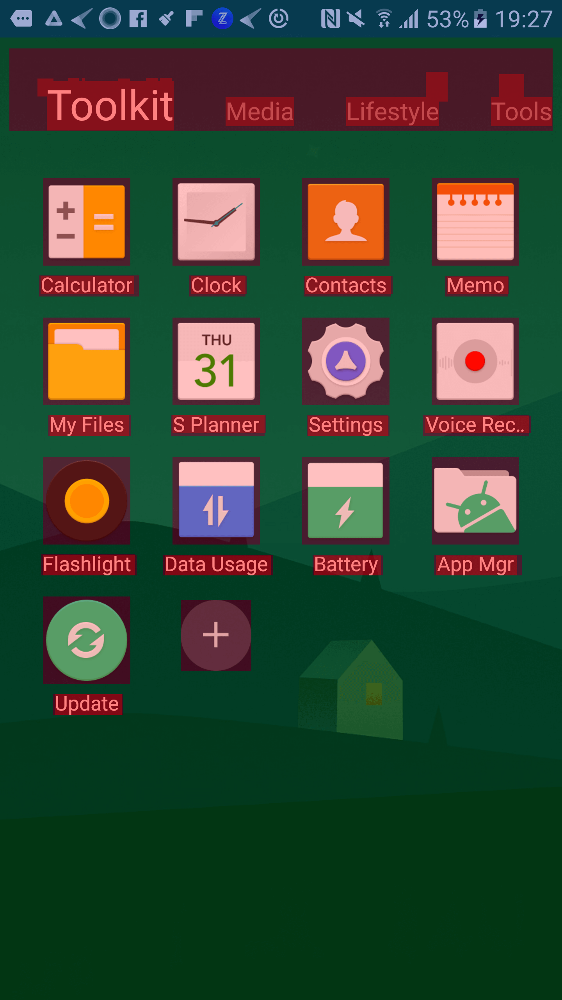
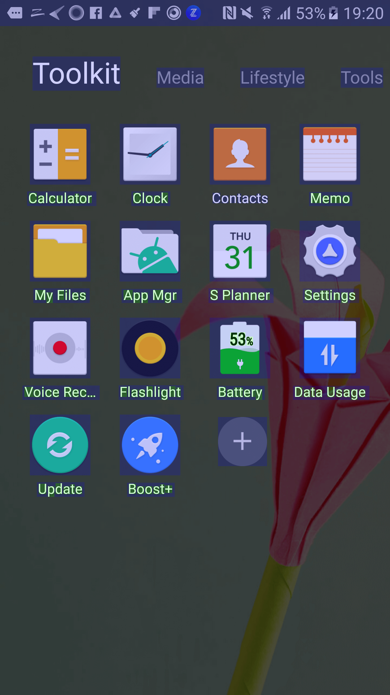
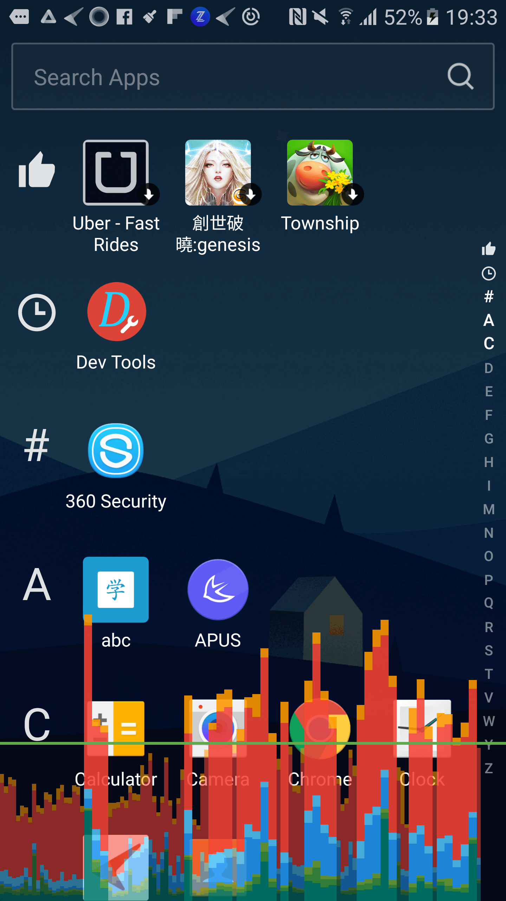
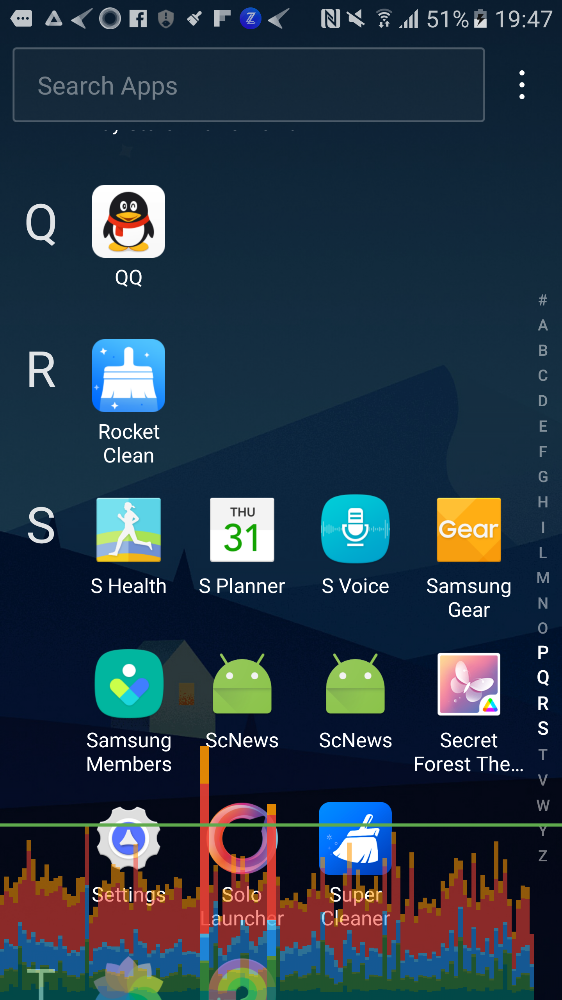
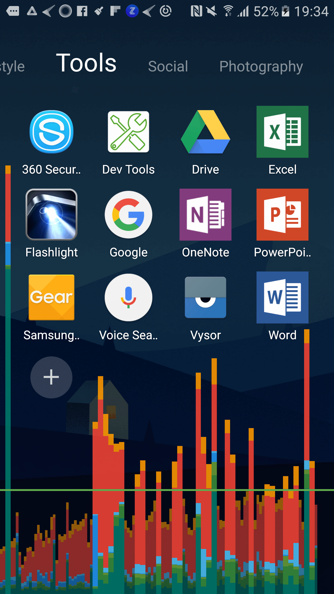
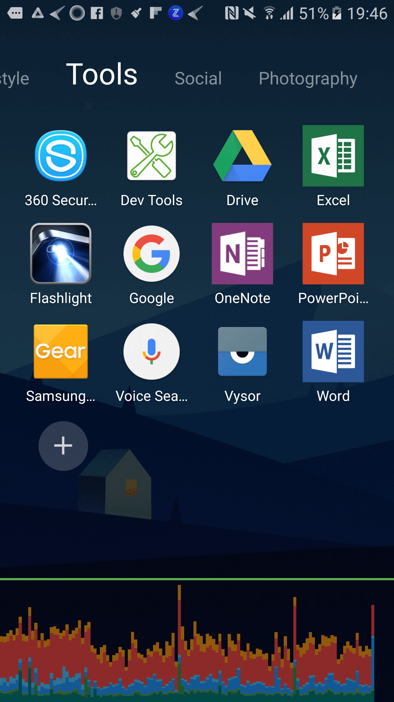
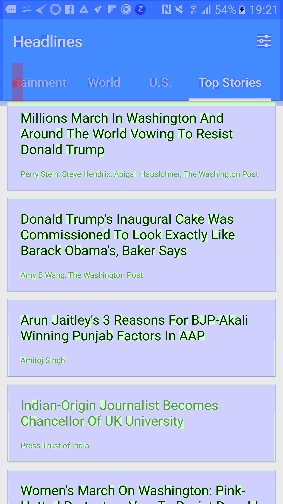
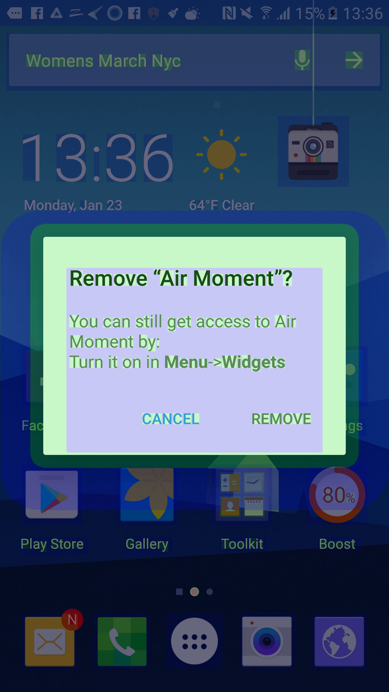

性能优化注意事项
所有人相关
-
避免大面积的动画。e.g.文件夹的打开和关闭、AppDrawer动画、QuickSettings动画、HideApps等，都是从点扩展到整个屏幕，从整个屏幕收缩成一个点。
- 跨度大，稍微一卡就很容易看出来。
- 动画数量多，包含alpha，scaleX，scaleY，translation等等，对硬件性能要求很高。竞品看过之后发现，大多数Launcher只有文件夹这种强相关的才使用展开动画，一般相关动画就直接alpha值、蒙黑加小距离translation就可以了。要兼顾低性能手机的表现。
-
过渡动画可以隐藏掉不需要的细节。比如从A过渡到B，可以在动画开始时瞬间隐藏A的前景，只保留背景。这样动画时的绘制消耗几乎减小一倍。像Apus的文件夹打开这个大面积动画，点击的瞬间桌面上的所有图标都消失了，而且并没有影响动画效果。这种不损耗效果的性能提升要多考虑。
-
可以分步骤显示内容。比如从A过渡到B，动画时只显示B的背景或者B的占位，过渡动画结束后再使用新的动画把B的内容展示出来，即分步骤展示，减轻动画的瞬时压力。比如Hola搜索动画和Apus的综合页。
-
动画间要考虑冲突。比如Apus点击Boost开始动画的时候，风铃会消失，避免多个动画的同时进行。反观我们的launcher，天气动画、风铃动画、Boost动画可以同时进行，低配手机上肯定比较卡。
-
动画时避免不必要的逻辑。业务逻辑给动画让步。
DEV相关
工具
-
GPU Overdraw
 
overdraw颜色和绘制次数的关系。
- 查看Overdraw的形成
Tracer for OpenGL 工具
-
Show GPU profile as Bar，直观显示卡顿与否。
 
 
-
BlockCanary
不能用太差的手机。
- StrictMode，检查IO
- Systrace/Method trace
- View Hierarchy/Layout Inspector
- Lint
知识点
- 选择尽量简单的绘制方案。
-
壁纸绘制，使用ColorFilter
mWallpaperPaint.setColorFilter(new LightingColorFilter(0xff262626, Color.TRANSPARENT)); -
分段背景绘制, 新闻页
</img>
-
onDraw中使用clipRect
-
- 写完功能多想想，显示B之后要隐藏A。
- 针对复杂的Layout，使用RelativeLayout减少ViewTree深度。
- 针对include情况，使用Merge标签减少ViewTree深度。
- 无意义代码要放在动画开始之前。例如Flurry
- 耗时操作要注意不能阻塞主线程。例如数据库操作、耗时Utils
- SharedPreference分文件，无跨进程的需求一定注意。
- 慎用TextView的ellipsize：marquee，View的fadingEdge
- 不要使用LinearLayout的嵌套Weight布局。measure指数爆炸
- Activity的layout如果根节点必须定义background属性，则将theme的windowBackground指定为@null
- 重写onDraw一定不能包含耗时操作以及临时变量。例如在ondraw、getview中应减少对象申请，尽量重用。更多是一些逻辑上的东西，例如循环中不断申请局部变量等
- xml里面View节点不能包含冗余属性。
- 使用TextView的CompoundDrawable代替TextView+ImageView。
-
尽量不要在Launcher上堆砌过多的View，改用Activity来实现。
</img>
- 慎用Alpha
- 用TextView/EditText的时候，如果这个TextView会运行时setText或setHint，那么它的layout_width最好是match_parent或固定宽度。防止requestLayout
- LinearLayout里面有多个TextView时，注意设置baselineAligned属性为false。防止requestLayout
- 技术选型要考虑过度绘制。
- RecyclerView和ListView的选择。
OverDesign
- 复杂的Layout层级，重叠的View，复杂的逻辑
- 开发人员无节制的View堆砌，究其根本无非是产品无节制的需求设计。
- 由俭入奢易，由奢入俭难